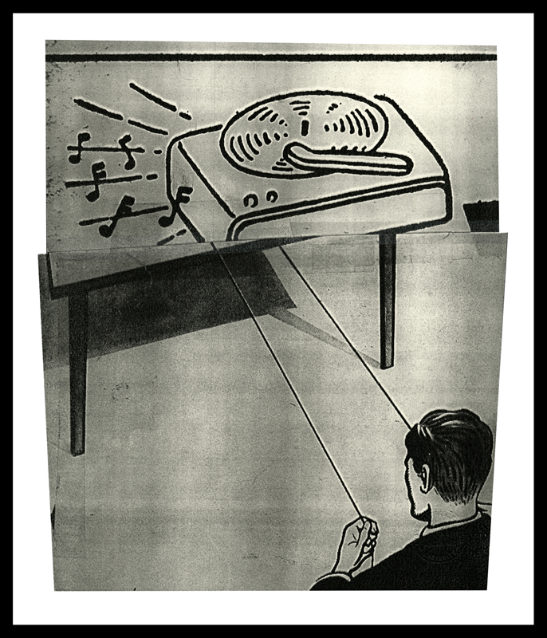

John Schulz
John Schulz: New Work
November 2-19, 2011
Opening reception Friday November 4, 2011, 5-8PM
Artist Statement:
Andre Breton, founder of Surrealism, once said: “The highest endeavor to which poetry can aspire is to compare two objects as remote as possible from one another, or by any method whatsoever, (to) bring them into confrontation in an abrupt and striking way.” In this way, third meanings are generated from elements that remain otherwise undistinguished.
Pop Art and Fluxus, the legacy of Dada, held not only that anything could become art if placed in the proper context, but that the object itself could also become self-critical, a reflection of the culture that produced it. Even the most banal images are deeply rooted in the fabric of day–to–day experience and the collective psyche. In archeological practice, the garbage heap has as much value, if not more, than the other relics in a dig.
My work is a dialogue with some of the lower common denominators of visual culture. I am drawn to images that at once strike me as enigmatic, strangely beautiful, and vaguely threatening, familiar things jerked out of context and thrust together as in “the chance meeting of a sewing machine and an umbrella on a dissecting table.”
My current practice is a means of opening up the psychological potential underlying all images beyond their immediate function and intent. I am interested in deconstructing commonplace didactic and commercial images to the point of voiding their original content through fragmentation, and recombining them with other bits of detritus and text to propose new possible readings. Varieties of chance operations are employed systematically to keep conscious selection and decision-making as neutral as possible. As formal and linguistic relationships emerge through these procedures, these are also exploited in evolving content.
In the end, I want to make something beautiful out of the insignificant, to lift the veil of banality covering the commonplace. I want my work to have a presence like furniture to which other meanings might be attached, like the rubber gloves and artichokes in the paintings of deChirico. A critic once spoke of my work as “essentially leaden and humorless.” I found that to be a quite sensitive observation, and took it as a compliment.
John Schulz
{kind=link}
{kind=link}
{kind=link}
{kind=link}